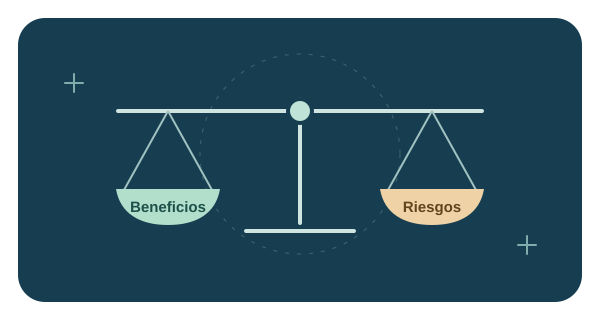

Un punto de partida
Puede preparar un borrador de una función o una explicación inicial. Esto ayuda a empezar una tarea que después debes revisar y adaptar.
Beneficios y riesgos
La utilidad de una herramienta depende de la tarea, del contexto y de cómo se comprueba su resultado.

Puede preparar un borrador de una función o una explicación inicial. Esto ayuda a empezar una tarea que después debes revisar y adaptar.
Puede explicar un fragmento de código paso a paso o presentar un ejemplo. Conviene contrastar la explicación con lo que hace el programa.
Puede sugerir distintas formas de resolver un problema. Compararlas permite discutir sus ventajas y elegir según los requisitos.
Una propuesta puede utilizar una función que no existe o interpretar mal una regla. Comprueba su comportamiento con documentación oficial y pruebas.
El código puede incluir contraseñas, claves o datos personales. Utiliza ejemplos ficticios y comparte solo el contexto necesario.
El asistente puede desconocer restricciones del proyecto. Una solución que funciona en un ejemplo puede requerir cambios en el programa real.
Copiar una solución sin entenderla dificulta encontrar errores y mantener el código. Lee, explica y prueba cada parte.
| Tarea | Beneficio posible | Limitación |
|---|---|---|
| Programar | Obtener un punto de partida para una función. | El código puede contener errores o asumir requisitos incorrectos. |
| Comprender código | Recibir una explicación inicial. | La explicación puede omitir detalles del proyecto. |
| Crear pruebas | Explorar distintos casos de entrada. | Los casos sugeridos pueden ser insuficientes. |
| Documentar | Preparar un borrador organizado. | El texto puede describir funciones que el código no tiene. |
Imagina que un asistente propone esta función para rechazar títulos vacíos.
function validarTitulo(titulo) {
return titulo.length > 0;
}«Estudiar JavaScript» se acepta y el texto vacío se rechaza. Pero un título de tres espacios se acepta porque su longitud es 3, aunque sigue sin contener texto útil. Ver cómo detectar el fallo con una prueba.
Para recordar: una respuesta rápida es un comienzo. Su calidad se demuestra al comprobar que satisface el requisito.